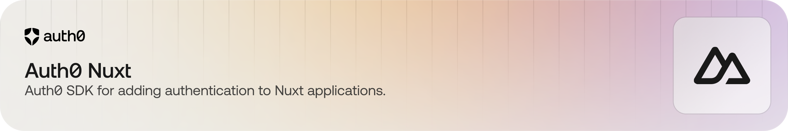

Auth0 Nuxt

The Auth0 Nuxt SDK is a library for implementing user authentication in Nuxt applications.
:warning: Please be aware that auth0-nuxt is currently in Beta. Whilst we encourage you to test the update within your applications, we do no recommend using this version in production yet. As with any beta release, we look forward to your questions and feedback to help us improve the library.


📚 Documentation - 🚀 Getting Started - 💬 Feedback
Documentation
- Examples - examples for your different use cases.
- Docs Site - explore our docs site and learn more about Auth0.
Getting Started
1. Install the SDK
npm i @auth0/auth0-nuxt@beta
This library requires Node.js 20 LTS and newer LTS versions.
2. Register the Auth0 Nuxt Module
The Auth0 Nuxt module is registered in the nuxt.config.js file, together with the runtime configuration.
{
modules: ['@auth0/auth0-nuxt'],
runtimeConfig: {
auth0: {
domain: '<AUTH0_DOMAIN>', // is overridden by NUXT_AUTH0_DOMAIN environment variable
clientId: '<AUTH0_CLIENT_ID>', // is overridden by NUXT_AUTH0_CLIENT_ID environment variable
clientSecret: '<AUTH0_CLIENT_SECRET>', // is overridden by NUXT_AUTH0_CLIENT_SECRET environment variable
sessionSecret: '<SESSION_SECRET>', // is overridden by NUXT_AUTH0_SESSION_SECRET environment variable
appBaseUrl: '<APP_BASE_URL>', // is overridden by NUXT_AUTH0_APP_BASE_URL environment variable
},
},
}
The AUTH0_DOMAIN, AUTH0_CLIENT_ID, and AUTH0_CLIENT_SECRET can be obtained from the Auth0 Dashboard once you've created an application. This application must be a Regular Web Application.
The SESSION_SECRET is the key used to encrypt the session cookie. You can generate a secret using openssl:
openssl rand -hex 64
The APP_BASE_URL is the URL that your application is running on. When developing locally, this is most commonly http://localhost:3000.
You will need to register the following URLs in your Auth0 Application via the Auth0 Dashboard:
- Add
http://localhost:3000/auth/callbackto the list of Allowed Callback URLs - Add
http://localhost:3000to the list of Allowed Logout URLs
Routes
The SDK for Nuxt Web Applications mounts 4 main routes:
/auth/login: the login route that the user will be redirected to to initiate an authentication transaction. Supports adding areturnToquerystring parameter to return to a specific URL after login./auth/logout: the logout route that must be added to your Auth0 application's Allowed Logout URLs/auth/callback: the callback route that must be added to your Auth0 application's Allowed Callback URLs/auth/backchannel-logout: the route that will receive alogout_tokenwhen a configured Back-Channel Logout initiator occurs
To disable this behavior, you can set the mountRoutes option to false when registering the module (it's true by default):
modules: [['@auth0/auth0-nuxt', { mountRoutes: false }]]
Alternatively, if you wish to change the endpoint paths used for mounting, you can specify the routes option:
modules: [['@auth0/auth0-nuxt', {
routes: {
login: '/custom-auth/login',
logout: '/custom-auth/logout',
callback: '/custom-auth/callback',
backchannelLogout: '/custom-auth/backchannel-logout',
}
}]]
3. Adding Login and Logout
When using the built-in mounted routes, the user can be redirected to /auth/login to initiate the login flow and /auth/logout to log out.
<a href="/auth/logout">Log out</a>
<a href="/auth/login">Log in</a>
When needed, you can also pass a returnTo querystring parameter to the login route to redirect the user back to a specific URL after login was successful.
When not using the built-in routes, you want to call the SDK's startInteractiveLogin(), completeInteractiveLogin() and logout() methods through the useAuth0() composable, which is available in the server-side context of your Nuxt application.:
// server/routes/auth/login.js
export default defineEventHandler(async (event) => {
const auth0Client = useAuth0(event);
const authorizationUrl = await auth0Client.startInteractiveLogin(
{
authorizationParams: {
// Custom URL to redirect back to after login to handle the callback.
// Make sure to configure the URL in the Auth0 Dashboard as an Allowed Callback URL.
redirect_uri: 'http://localhost:3000/auth/callback',
}
}
);
sendRedirect(event, authorizationUrl.href);
});
// server/routes/auth/callback.js
export default defineEventHandler(async (event) => {
const auth0Client = useAuth0(event);
await auth0Client.completeInteractiveLogin(
new URL(event.node.req.url as string, 'http://localhost:3000')
);
sendRedirect(event, 'https://localhost:3000');
});
// server/routes/auth/logout.js
export default defineEventHandler(async (event) => {
const auth0Client = useAuth0(event);
const returnTo = 'https://localhost:3000';
const logoutUrl = await auth0Client.logout(
{ returnTo: returnTo.toString() }
);
sendRedirect(event, logoutUrl.href);
});
With those in place, you will be able to call auth/login and auth/logout to log the user in and out of your application.
4. Protecting Routes
4.1 Route Middlware
In order to protect a Nuxt route, you can use the SDK's useUser() composable method in a custom route middleware. This will check if there is a user and redirect them to the login page if not:
// middleware/auth.ts
import { useUser } from '@auth0/auth0-nuxt';
export default defineNuxtRouteMiddleware((to, from) => {
const session = useUser();
if (!session.value) {
return navigateTo(`/auth/login?returnTo=${to.path}`);
}
});
[!INFORMATION]
You can replace the check above with any check you want, such as checking for a specific user claim.
With that middleware in place, you can protect routes by adding it to the middleware property of the corresponding Nuxt route:
<script setup>
definePageMeta({
middleware: [ 'auth' ],
});
</script>
4.2 Server Middleware
Additionally, you can also use a server middleware to protect server-side rendered routes by using the useAuth0 server-side composable. This middleware will check if the user is authenticated and redirect them to the login page if they are not:
// server/middleware/auth.ts
export default defineEventHandler(async (event) => {
const url = getRequestURL(event);
if (url.pathname === '/private') {
const auth0Client = useAuth0(event);
const session = await auth0Client.getSession();
if (!session) {
return sendRedirect(event, `/auth/login?returnTo=${url.pathname}`);
}
}
});
The above examples are both to protect routes by the means of a session, and not API routes using a bearer token.
5. Requesting an Access Token to call an API
If you need to call an API on behalf of the user, you want to specify the audience parameter when registering the plugin. This will make the SDK request an access token for the specified audience when the user logs in.
runtimeConfig: {
auth0: {
domain: '<AUTH0_DOMAIN>', // is overridden by NUXT_AUTH0_DOMAIN environment variable
clientId: '<AUTH0_CLIENT_ID>', // is overridden by NUXT_AUTH0_CLIENT_ID environment variable
clientSecret: '<AUTH0_CLIENT_SECRET>', // is overridden by NUXT_AUTH0_CLIENT_SECRET environment variable
sessionSecret: '<SESSION_SECRET>', // is overridden by NUXT_AUTH0_SESSION_SECRET environment variable
appBaseUrl: '<APP_BASE_URL>', // is overridden by NUXT_AUTH0_APP_BASE_URL environment variable
audience: '<AUTH0_AUDIENCE>', // is overridden by NUXT_AUTH0_AUDIENCE environment variable
},
}
The AUTH0_AUDIENCE is the identifier of the API you want to call. You can find this in the API section of the Auth0 dashboard.
Retrieving the token can be achieved by using getAccessToken using the server-side composable useAuth0:
const auth0Client = useAuth0(event);
const accessTokenResult = await auth0Client.getAccessToken();
// You can now use `accessTokenResult.accessToken`
Feedback
Contributing
We appreciate feedback and contribution to this repo! Before you get started, please read the following:
Raise an issue
To provide feedback or report a bug, please raise an issue on our issue tracker.
Vulnerability Reporting
Please do not report security vulnerabilities on the public GitHub issue tracker. The Responsible Disclosure Program details the procedure for disclosing security issues.
What is Auth0?

Auth0 is an easy to implement, adaptable authentication and authorization platform. To learn more checkout Why Auth0?
This project is licensed under the MIT license. See the LICENSE file for more info.